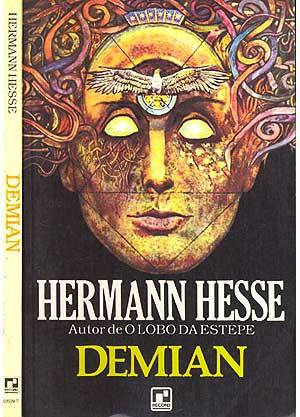
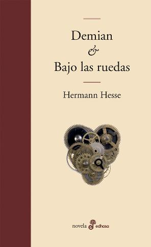

Trata sobre sobre la naturaleza doble del héroe, entre humana y de lobo, la cual condena al protagonista a una existencia perturbada. El libro se basa en parte en la biografía de Hermann Hesse, quien luchó contra la depresión durante toda su vida. Fue escrito en una época de aislamiento y soledad, durante una etapa de crisis, cuando el autor tenía alrededor de 50 años. La novela habla sobre las divisiones y contrariedades psicológicas internas, y la no identificación con la sociedad burguesa del momento. El lobo estepario ha sido aclamada por la crítica como una de las obras más innovadoras del autor.
Trata acerca de la vida de Emil Sinclair, un chico con una forma de pensar distinta a la generalidad de la gente, sintiéndose confundido pues no encuentra el objeto de su estancia en vida. La historia comienza cuando Emil era un niño. Emil siente que posee 2 lados, el bueno y el malo. El lado bueno pertenecía a su casa y su familia, donde todo era agradable hasta el punto del aburrimiento, basado en el amor de su padre y madre. El otro mundo, el lado oscuro, estaba fuera de su hogar, era todo lo demás que lo rodeaba, la gente de la ciudad, árboles, animales, etc., esto le causaba mayor emoción que el lado bueno. Con esto Emil se encontraba en una predicación, en uno encontraba amor y comodidad, y en el otro una nueva sensación
Es una novela que cuenta una historia de un adolecente huérfano de madre que vive en un pueblo alejado de la ciudad. El autor describe larga y precisa cada uno de los lugares donde se desarrolla la novela. Mas adelante encontraran los acontecimientos alegres y trágicos que le sucedieron a Hans, un personaje con miedos de la vida y que acude a otros medios para aliviar sus penas.Narra la historia de Hans Giebenrath, niño prodigio capaz de obtener las mejores calificaciones en todo y que es admitido en un seminario de alto nivel y con Hans como hilo conductor hace una crítica demoledora al sistema educativo que sólo se interesa por el desarrollo académico del alumno, olvidando el desarrollo personal y emocional.
